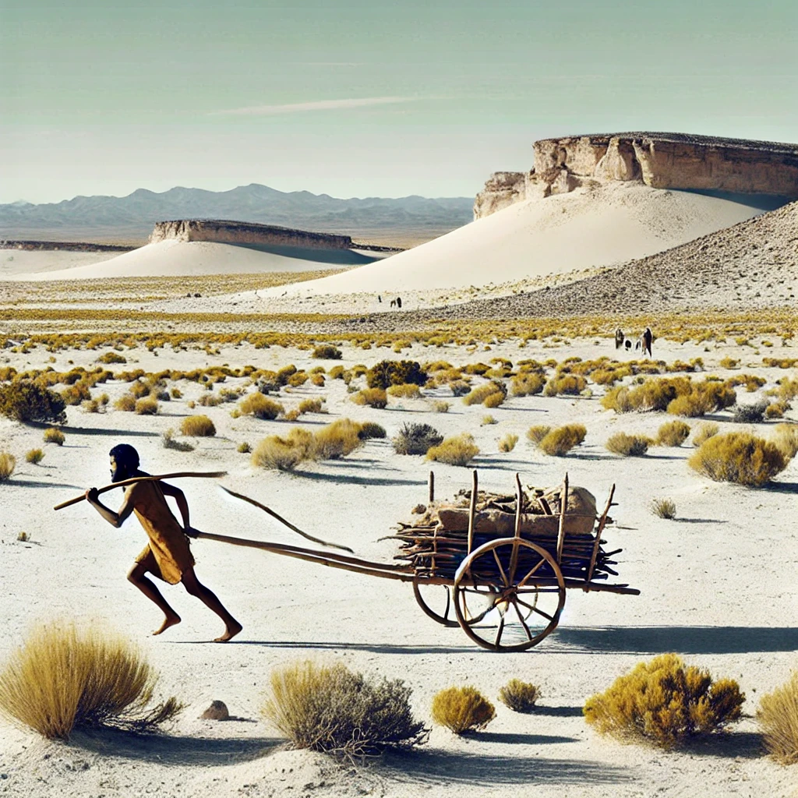

Yeni bir çalışma, New Mexico’daki White Sands Ulusal Parkı’nda tarih öncesi bir aracın kullanımına dair kanıtlar sundu.
New Mexico’daki White Sands Ulusal Parkı, atalarımızın tarihi hakkında yeni bakış açıları sunmaya devam ediyor.
İnsan ayak izlerini takip eden ahşap direk izleri, bu tekerleksiz el arabası benzeri cihazın eski toplumlar için ne kadar önemli olduğunu gösteriyor.
Quaternary Science Advances dergisinde yayımlanan yeni bir çalışmada, bilim insanları White Sands Ulusal Parkı’nda bulunan ve insan ayak izlerini takip eden ahşap direklerin oluşturduğu izleri inceledi. Muhtemelen bu izler, tarih öncesi en basit taşıma araçlarından birini gösteriyor.
Aynı zamanda, bilinen en eski taşıma araçlarından biri olan travois’e dair kanıt sunuyorlar. Ahşap direklerden ve insan ayak izlerinden oluşan bu doğrusal izler yaklaşık 22.000 yıl öncesine tarihleniyor.
“Temelde, tekerleksiz bir el arabasıdır,” diyor çalışmanın yazarı, Bournemouth Üniversitesi’nden Matthew Bennett.
Tekerlek, bağımsız olarak birkaç farklı bölgede icat edilmiş olup en erken örnekleri MÖ 4500’e kadar uzanıyor. Ancak New Mexico’daki izler bundan çok daha eski.
Bu durumda, travois tekerlekli ulaşımın öncüsü olan bir sistem olabilir.
New Mexico’daki fosil kayıtları, Amerika kıtasındaki insanlık tarihini yeniden şekillendiriyor.
2024’te yayımlanan bir araştırma, bölgede 23.000 yıldan daha eski insan ayak izlerinin bulunduğunu doğruladı.
“Bu eşsiz ayak izi kaydı,” diyor araştırmacılar, “taşıma teknolojisinin bilinen en eski kanıtlarından biri olabilir.”